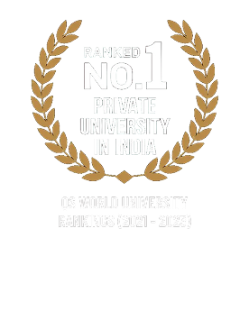
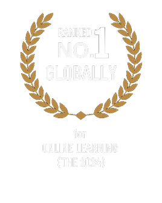

Journey into the Heart of India with the
M.A. in
India Studies
UNDERSTAND INDIA. ENGAGE THE WORLD.

Journey into the Heart of India with the
M.A. in
UNDERSTAND INDIA. ENGAGE THE WORLD.


The Master of Arts in India Studies offered by the Jindal India Institute (JII) at O.P. Jindal Global University (JGU) offers a unique opportunity to learn about the many facets of India. Over the course of one year, you'll explore everything from India's politics, history, and philosophy to its business, technology, literature, music, dance, and cinema. This comprehensive programme is designed for those who want to gain a deep and wide understanding of India's diversity and dynamism while studying flexibly from anywhere in the world. You'll learn from some of the best scholars in the field, all of whom bring an interdisciplinary approach to their teaching.
With 100% online interactive learning, you can continue working, balance your personal life, and avoid the costs of relocation, while accessing a rich repository of learning resources. Join a global community of students and broaden your perspective on India and its role in shaping the world today.
 Learn More About
Learn More About

Associate Professor, Jindal School of International Affairs (JSIA)
&
Director, Jindal India Institute (JII)
 Hindol Sengupta.png)
Professor and Executive Dean, Jindal School of International Affairs
&
Director, Jindal India Institute

Associate Professor and Associate Dean, Global Initiatives,
Jindal School
of International Affairs

Lecturer, Jindal School of International Affairs
& Programmes Lead,
Jindal India Institute

Assistant Professor, Jindal School of International Affairs
& Fellow,
Jindal India Institute

Assistant Professor,
Jindal School of International Affairs

Lecturer and Programme Coordinator – Online Programmes,
Jindal
School of International Affairs

Assistant Professor,
Jindal School of International Affairs

Adjunct Faculty,
Jindal India Institute

Associate Professor, Jindal School of International Affairs
& Fellow,
Jindal India Institute

This case study looks at how the arts function as a core component of cultural strength and national prosperity. India's rich musical traditions give the country a unique opportunity to project its intangible heritage at home and abroad. The study considers how public-private collaboration, supported by technological innovation, can help India use culture as a source of soft power.

This case study looks at how India's old music and dance traditions help shape national identity. These traditions are not only forms of entertainment; they carry ideas and values that have been passed down for centuries. By protecting and promoting them, a nation can stay connected to its roots and draw guidance from its past.

This case study traces the journey of Indians who moved to different parts of the world. It covers early traders, indentured workers during colonial rule, and today's professionals. The study shows how the diaspora influences the culture, economy, and politics of both India and their new countries.

This case study explores the thrilling Salim-Javed blockbuster hit from the 1970s. It connects the rise of the "Angry Young Man" archetype to the turbulent socio-political context of India during the Emergency period. The narrative allows us to empathize more deeply with the rise and fall of grey protagonists in Bollywood cinema.
| Fee | Amount | Due Date |
|---|---|---|
| Registration Amount | INR 25,000 | Upon acceptance of Offer Letter |
| Instalment 1 | INR 1,25,000 | Before Batch Commencement |
| Instalment 2 | INR 1,25,000 | By 15th Jan 2027 |
Pay conveniently through JODOCRED, with low-interest monthly instalments and a fully digital 15-minute approval process.
-Let's Hear From
Them Directly




Reach out to know more about programmes, admissions, and opportunities.